LX1919
I Have Forsaken All For Jesus
_趙君影
431我已撇下凡百事物
[華]
|
|
431我已撇下凡百事物 |
|
|
1.我已撇下凡百事物，背起十架跟耶稣，
世上福乐、名利、富贵，本已对我如粪土。
2.主未亏我，主未负我，有谁甘甜如我主？
为何内心恐惧战兢，手扶犁头向后顾？
3.往者已逝，前路尚遥，主的恩典够我用；
死荫幽谷主手牵扶，留此残躯再尽忠。
4.四顾迷羊，流离困苦，有谁同情有谁怜？
灵魂丧失日以万计，神家荒凉到何年？
5.愿主洁我，炼我，用我，余下光阴胜于先，
尽心竭力讨主喜悦，直到站在我主前。
|
|
|
|
|
|
K05
香港对圣诗出版有特殊贡献者
[
Hymn Index
]
趙君影牧師 Calvin
Chao,1906-1996
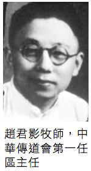
http://www.mbcsfv.org/chinese/library/hymncampanions/137.html
Chao, Calvin 趙君影 22, 137
趙牧師年青時也曾胸懷大志，愛讀名人傳記，想創偉業。在他未奉獻前，宗教祇是他整個生活的附屬品，而不是生活的動力。他曾說過：「三十六行，敲鑼賣糖，行行都行，就是牧師不當。」1931年他重生得救後，不久獻身，作了一輩子的傳道人。
中華歸主運動[編輯]
1948年去香港，建立香港培靈學院和新加坡神學院。
1956年移民美國，推行中華歸主運動，成立「基督教中華歸主協會」（洛杉磯、柏克萊、聖荷西、海沃德、芝加哥、紐約均有聚會），1985年，趙牧師在晚年創辦「中華歸主神學院」（洛杉磯），最後以90高齡逝世。
我已撇下凡百事物
(I Have Forsaken All For Jesus) 431.
1954年，趙君影牧師（Calvin
Chao,1906-1996,見p.22）被邀請到菲律賓的碧瑤主領一個夏令會，有一位姊妹在學生時，因聽趙牧師的講道而決志信主。
在夏令會時，她的父親突然去世，她不明白為何
神如此苦待她？帶走了她最親愛的父親。
趙牧師知道後，就安慰她，與她一起禱告；並對她說：「我願意做你屬靈的父親。」
她欣然接受。
此後他們雖不常見面，但趙牧師經常勉勵她：無論在何環境，天父的慈愛永不離開她。
趙牧師想到自己的一生中也有許多時候，
神沒有直接答應他的禱告，因而起懷疑，以為 神不愛我們，日後才明白 神要我們體會祂更大的愛；在此情景下，他寫了這首詩，由黃楨茂（Huang
Chen-mou,
見p.44, p.188）譜曲。
在趙牧師所作的十九首詩歌中，筆者對此詩特別偏愛。
我的獨子在他十歲的那年，游泳時被主接去。
不久聽到異地友人的幼兒跌落泳池，救起後昏迷不醒，數日後復甦，這個消息令我久久難以釋懷，但「因我所遭遇的是出於祢，我就默然不語。」（詩39:9）。
廿多年後在美與友人重逢，得悉他們的幼兒因當年腦部缺氧過久而成弱智，這些年來一直是父母身心上的重擔。
主啊！「現在我知，祢是愛我，時間越久，我越知道祢是愛我」。
趙牧師所作的「盡忠為主」一詩，是他和趙師母一生的寫照。
我已撇下凡百事物，背起十架跟耶穌，
世上福樂名利富貴，本已對我如糞土，
主未虧我主未負我，有誰甘甜如我主？
1906 — 1996
Calvin Chao
二十世紀華人教會名牧和教會領袖、神學教育家。曾先後擔任中華傳道會總幹事、中國基督徒大學生聯合會總幹事、基督教中華歸主協會創辦人，和中華歸主神學院院長。
重慶
一、早年背景
趙君影於1906年出生在湖北省的漢川縣。父親在清朝是一位縣級官員，民國後失意成為一個吸毒者，無法自拔，使家庭陷於貧困。趙君影自小便過著寄人籬下的生活，飽受貧窮與困苦。6歲時母親病死，臨終前要她做一個好人，他答應了母親的要求，也終身遵守不渝。母親去世後不久，父親將君影送入一所教會學校——江蘇鹽城的基督書院讀書。他雖出身貧寒，卻在課業上名列前茅。基督書院院長賈嘉美（James
Graham III）和另一外國傳教士Bridgman Hugh
White對他非常關心，在經濟上對他多有幫助。賈嘉美講一口純正的中國官話，也會說地方俗語。講課時完全不帶洋腔，有聲有色；講道時常令人哄堂大笑。他也非常喜愛體育運動，在校組織了美式足球隊，趙君影曾擔當四分衛（quarterback）。校長及其一家對趙君影的一生影響很大，特別在聖經基要真理，和基督徒在現實生活中的行事為人方面影響尤大。
二、信仰經歷
1922年，在北京、上海等大城市的高等學校中爆發了“非基督教運動”，掀起了反基督教風潮。1925年趙君影中學畢業那年，孫中山先生逝世；同年又爆發了“五卅慘案”，反帝愛國運動席卷全國。趙君影積極參加愛國活動，開會、貼標語、遊行、演戲、抵制英貨。在“非基運動”中，中國知識分子高舉科學與民主，攻擊基督教是帝國主義的先鋒。趙君影的宗教信仰受到了空前的挑戰。16歲的他掙扎於丟棄基督教信仰，從事愛國運動；還是退出愛國運動，專心追求基督教信仰。那時他雖然心�堳雈椄煄A但還是持守住了自己的信仰。但在現實中，雖然他很愛國，但因為他是個基督徒，而且在外國人興辦的教會學校�媗狙恁A與外國人為友，因此他總是感覺受到排斥。
趙君影年輕時熱愛運動，在杭州之江大學四年間，為大學籃球校隊隊員，曾任隊長。後轉到南京金陵大學，讀至四年級時，僅差三個月就大學畢業，卻肺病復發，被迫立時退學，到杭州松木廠一間教會辦的肺病療養院（Love
and Mercy Hospital）養病。Dr. Nelson Bell 是他的主治醫生。不久，賈嘉美校長的母親Aunt Sophie
Graham接他到她家，像母親一樣照顧他。由於當時肺結核幾乎無藥可救，趙君影面臨死亡，精神上倍受打擊，就好像晴天霹靂一樣。他以為只能再活兩年，有一晚竟拿起安眠藥，差點自殺。在這段時間�堙A他閱讀了很多有關生死的書籍，在孔子的書中找不到生死的答案；在一位佛教法師的演講集中，也得不到安慰。剛好同房病人在看托爾斯泰的《懺悔錄》，他就借了來讀，因此就被托爾斯泰帶上了一條基督教解決生死問題的途徑。托爾斯泰功成名就之時，卻思考著走上自殺之路，這引起了趙君影的共鳴，托爾斯泰使他看到了基督教對生與死的答案。隨後他又閱讀了更多的托爾斯泰的作品和大量的中英文屬靈書籍。結果形成他日後大學生工作中幾篇重要的講章：“神觀——我為什麽相信有神”；“我的人生觀”；“我的宇宙觀”和“我的倫理觀”，這些信息帶領不少的青年學生信主。特別在江蘇江陰教會學校教英文時，他甚至帶領95%的學生信主。
在病痛與絕望中，趙君影學到了寶貴的信心功課，當他的肺病得到神奇妙的醫治，又經過了一段短時間的教學生涯之後，他決定一生走上全時間事奉的道路，要把自己所走過的路，以及內心對信仰掙扎的經驗，告訴在校的大學生，引導他們走上真理之路。
1931年初，趙君影參加了蘇北淮陰教會的佈道會，當時邀得著名佈道家計志文牧師及上海伯特利佈道團來主領聚會。計牧師傳福音，簡單而直接地引用聖經，並且穿插著一些動人的故事，使與會者非常受感動，結果有不少人走到臺前悔改信主。趙君影雖然心受感動，但不願當眾決志，頑梗不肯屈服。到了第七個夜晚，他最終被計牧師的話“人人都是罪人，即使受了大學教育，仍是罪人，應該悔改”所感動，覺得這話明明是指向他講的，於是他就一面禱告，一面哭泣著走到臺前徹底悔改認罪。六個月後，他又前往江西省九江縣廬山的牯嶺，參加王明道先生的佈道會，這是趙君影平生第一次聽王明道講道。日後，兩個人成為最要好的朋友。趙君影是由計志文帶領真正重生得救，而由王明道得著了救恩的確據，從而使趙君影走上一條信心之路，能夠終生依靠永不改變的基督度敬虔的信心生活。1933年，趙君影參加了一場七天的培靈會，會上由張性初女士傳講聖潔生活之道，勸勉聽眾要彼此認罪，互相代求，棄絕卑賤的事，就必做上帝貴重的器皿。聽過之後，趙君影大為感動，寫信給多人認罪。但有一件牽涉20元錢的事，讓他心�堣@直過不去，以至於三次走到郵筒又走了回來，猶豫再三才最後將認罪的信投進去。後來趙君影在主日講道時提及這事，引起多人的共鳴，進而流淚悔改，這使他第一次看到自己被破碎過後發出的能力。次年，趙君影與張性初同心相愛，最後在神的帶領下走入婚姻的殿堂。此後，張性初在他事奉的道路上成為賢內助。
三、初期事奉
1935年，趙君影決定奉獻當全時間傳道人。雖然當時有十幾個地方在等著他，但他和妻子經過長久禱告，卻決定去揚州一間不能付給他們生活費的教會做傳道人。初到這間只有十幾位老太太和老先生的教會，他曾有兩個半月沒有收入。而這時他父親和妻子的父家還需要他們寄錢幫補。
有一次，趙君影父親對他大發脾氣，要與他斷絕父子的關系，並且拿刀要殺他，因為他視傳道人如同討飯的乞丐，他不想要這樣一個討飯的兒子。因此父親一面大叫“我今天非把你殺掉不可”，一邊舉起菜刀要砍他，虧得被別人架住。在那段日子�堙A趙君影晚上不敢睡覺，用桌子抵住門，又往窗外垂了繩子，以便逃跑。但他沒並有迴避父親，搬到別人家�堨h住，而是靠著禱告面對困難。他痛苦的在神面前禱告說：“我是一個討飯的傳道人，我枉費了人生，毫無志氣，連父親都養不活，難道我虛度人生了嗎？有什麽比遵行你的旨意更高貴、更美好呢？”
他就這樣仍然決心走傳道之路。為此，他父親耿耿於心，在十年期間，只看望過他三次。
有一次，江蘇海州的一個長老會教會請趙君影去主領聚會，但苦無旅費。他禁食禱告幾天後，心�埵雪P動，覺得上帝要他去當掉結婚戒指。當時趙師母在另一個房間禱告，也受了同樣的感動，於是她發出了這樣的禱告：“戒指雖是我們結婚紀念品，但我曾說過，我愛主勝過一切。故現在將戒指的所有權完全交托給你，戒指也不再在我心中占有任何地位，因為它已經屬於你了。”
既已決定，事不宜遲，趙君影馬上要去當鋪典當戒指。那時已經入夜，趙師母說：“男人去當戒指，成何體統？”
趙君影回答：“這麽晚了，怎能讓你一個女人出去？”
於是兩人決定一起去，走了一個半小時，沒有一家當鋪是開門的。趙君影打算要趙師母坐車回家，自己走回家。趙師母說：“這時候我怎能撇下你一個人坐車呢？”
最後倆人還是一起走回了家。到家後，他們只能餵小孩子一點糖水，因為沒有錢買奶粉。第二天一早，趙君影出去當了戒指，所得錢款一半留作家用，一半用作路費去江蘇領聚會。在火車上，上帝的愛澆灌下來，趙君影寫下了詩歌“主啊，我心愛你。”
這首詩歌後來經由蘇佐揚牧師譜曲，流行於中國各地教會。其中一段歌詞是：“我眼流淚，我心破碎，主啊，我深愛你！或遭敵對，或遭誤會，主啊，我深愛你！”
四、佈道十字軍
二十世紀三十年代，美國西雅圖的一些愛主的商人，參與發起Duncan McRoberts所倡導的“中國本土學生福音布道團”（Chinese
Native Evangelical
Crusade），趙君影將此直譯為“佈道十字軍”。他們在經濟上直接支持中國人自己做宣教的工作，這可以解決西方宣教士到中國宣教的很多困難，諸如語言上的障礙、生活上的適應，以及路費的支出等。當時許多西方差會的工作方式，大都由外國宣教士領導、帶領教會，甚少起用中國信徒成為教會的領袖，這大大不利於中國教會的自立，以及福音工作的擴展。1944年冬，趙君影與內地會的艾得理合作，在重慶各大學校園內開展福音的工作。趙君影擔任佈道十字軍的總幹事,
艾得理為副總幹事。在此期間，趙君影受到不少的攻擊與非議。一方面來自某些西方宣教士，他們不能接受華人自立、自養、自傳這一嶄新的異象；另一方面亦有多人懷疑中國人的行政及管錢的能力。但趙君影從小就養成了堅強的毅力與不屈不撓的精神，猶如在球場上的比賽，拼搏到底。加上他能言善辯，並具有美好的靈性，因此往往能夠力排眾議，為日後華人教會的自立與學生復興運動，開辟出一個新的天地。為了有效開展大學生校園工作，趙君影特別邀請了年青的于力工與他同工，培養他成為其重要助手，協助他大力推動大學生的福音與復興運動。甚至後來他們到了美國，仍一同致力於中國留學生的福音工作。1938年，趙君影向全湖南的縣長證道，使得湖南教育廳廳長歸主，這是當時的一件大事。
五、全國基督徒大學生聯合會
當時中國的大學生多集中於大後方的幾個城市，工作上比較容易開展。當時有內地會宣教士在不同的大學任教，建立校園團契。計志文牧師的巡迴佈道團，以及趙君影負責的“佈道十字軍”則致力於向學生傳福音。
1944年冬，趙君影在重慶沙坪壩，向中央大學和重慶大學的師生做了三天的佈道。他以“到底有沒有神？”作為第一天的佈道題目，將神學道理用當時大學生所熟悉的處境和言語加以講解，深入淺出，給青年學生們留下了深刻印象。第二天則講“基督徒的人生觀”，前來聽講的人坐滿了禮堂，連窗邊和門口都站滿了人。其它題目如“基督徒的宇宙觀”，以及“基督徒社會倫理觀”等，均引發知識分子的共鳴。詩班則在于力工的手風琴伴奏下，唱出中英文詩歌，配合著趙君影清楚有力的講道。最後呼召時，有不少人走到臺前決志信主。
1. 全國第一屆大學生夏令會
1945年7月，中國基督徒佈道十字軍改組為“中華傳道會”。趙君影主持召開了第一屆全國基督徒學生夏令會，地點在重慶南山的靈修學院。當時前來參加的有41所大學基督徒團契的153位代表。由於抗戰時期交通不便，由西北大學來的滕近輝在路上要花七天時間才到；由廣西來的學生更是步行了43天才最後到達。由此可以看出聖靈在作工，竟然感動那麽許多學生如此不辭勞苦地前來參加聚會。當時主要的信息由趙君影主講；賈玉銘牧師負責查經；何賡思負責專題。特約講員中有張治中、朱經農、張靜學、江守道，和尹任先夫婦等政經界名人。第一晚的開幕禮由趙君影主講，除證道外並闡明了大會的意義。當晚整個南山禮堂都坐滿了人，參加者約有600人之多。
據于力工牧師回憶：“大會中我也領禱告，那種如火如荼的同聲開口禱告，有如山東大復興時的宋尚節、計志文奮興會中的禱告，認罪流淚的禱告。”
滕近輝牧師也提到：“會上聖靈大大工作，我得到了復興，再一次將自己獻給主，一生事奉他。當時有十六位學生奉獻，其中有陳終道牧師。”
除滕近輝決志奉獻自己外，其他帶職奉獻的人也很多，將整個聚會帶入到屬靈的高峰。復興之火不斷地燃燒，全時間奉獻及蒙召的學生很多，為日後的中國教會帶來了新血與動力。在夏令會結束前的7月12日，成立了“全國基督徒大學生聯合會”（簡稱“學聯”）組織，趙君影被選為總幹事。
隨著抗戰的勝利，大學生的福音工作得著很大的發展。據估計到1951年為止，共有兩萬多學生因校園福音工作而信主。這段時期“學聯”的全職幹事一般都維持在30人以上，其中西洋人和中國人各半，而西洋人則以內地會的同工為主，包括孔保羅、賴恩融及任職副總幹事的艾得理。1946年1月，內地會將艾得理牧師借給“學聯”，他便由倫敦搭大型水上飛機飛來重慶，剛到重慶便參加了一個冬令會的禱告會。當時聚會人數極眾，會場充滿禱告、認罪和以神為樂的氣氛。學生們聚在一起，每個人自由開口，彼此代求。這個冬令會後使華西各大學的基督徒團契人數不斷增加。
2. 中國學生基督徒團契
1946年，趙君影在上海又成立了“中國學生基督徒團契”(China Inter Varsity Christian
Fellowship)，並於1947年正式加入在美國波士頓（Boston）剛剛成立的“國際學生基督徒團契”（International
Fellowship of Evangelical Students）為會員。當時國際學生基督徒團契的主席就是著名的福音派教會領袖鐘馬田（Martyn
Lloyd Jones）。
3. 第二屆全國基督徒大學生夏令會
1947年7月，“學聯會”舉辦了第二屆全國基督徒大學生夏令會，地點在南京中山陵附近的國軍烈士遺族學校，這是趙君影在中國帶領的最後一次全國性聚會。中國從沒有這麽多來自各地的基督徒學生在一起聚會，這是一個前所未有的聚會，好像是為將來火一般的試煉而準備的。大會主席由仍是學生的焦源濂擔任，林道亮主領早餐後的一小時查經。講員包括趙君影、賈玉銘和楊紹唐等人，會中更有蔣夫人宋美齡到訪鼓勵。精力十足的賈老牧師講道喜用大圖表，還常常即興唱起詩歌來，盡力將學生們帶入到靠基督得勝的生活中。趙君影所主講的羅馬書，對當時的學生有著特別的意義。因為當時的政治情勢，需要基督徒將自己的身體獻上當作活祭，甘願為主的名和榮耀受逼迫。賴恩融對這個夏令會有這樣的記述：“那真是一次令人難忘的聚會，上千位中國各地的學生蜂擁而至，有從海路來的，有搭飛機來的，也有坐火車的。……在那值得懷念的數天之中，有三百位青年男女不管前途如何，也不管將來有甚麽困難和危險，均熱切地表示願意奉獻他們的一生為主作活的見證。”
由於聚會實在非常的蒙恩，在最後一晚的聚會中，楊紹唐牧師主領的聖餐聚會作為高潮的結束，但學生們卻不願離開，爭著作見證，在短短的時間之內，竟有80人見證神對他們的愛，直至深夜聚會才結束。
六、趙君影的神學理念
要了解這次大學生復興運動背後的神學理念，可以從趙君影的成長過程去分析。趙君影曾說過：“我在當時所作的學生工作，在教義上是與賈玉銘一條路線；工作上是與王明道相呼應的；在奮興的事工上是宋尚節式的。現在回想起來，抗戰期間大學生的復興工作在基層上的教義都是基要派的，也就是賈玉銘所教授的。”
于力工牧師曾評論到趙君影所領導的大學生復興運動，是以“加爾文信仰為重，用的卻是衛斯理·約翰派的方法。……故要再重生再悔過，這也是說，人需要經過危機感的經驗（Crisis
Experience）才能成聖，才能完全不犯罪，過得勝生活，不致再從罪中墮落。”
可見趙君影的神學觀念，是植根於加爾文主義，也注重約翰衛斯理的成聖理念，因此他在講道中經常要求會眾悔改認罪，追求成聖。
趙君影的思想和講道跟他的成長的背景有很大的關聯。他走過的路，是大部分窮人走過的路；他與其同時代人有著共同的生活經歷，所以他的信息頗能在大學生中引起共鳴，進而接受基督教信仰。趙君影曾經過非基督教的風潮，長時期被科學、理性、民族感情、不平等條約、社會的黑暗，甚至教會的黑暗等所折磨。他也是一個喜好閱讀，更是認真思考的文化人。他對信仰深入的研究，以及他對當代名人有關信仰言論的思考，都深深打入聽眾的腦海，很多大學生都認同他的看法，因為這些也是他們腦海�堛滌暋D。例如他對陳獨秀、朱執信、胡適、梁啟超等人在五四時期對非基督教宣言所發出的言論，與其後來對托爾斯泰和叼雷博士等人思想的探索。這些不單只是他個人的問題，也是千千萬萬當代人，特別是知識份子的問題。他在摸索一條出路，很多人也在摸索一條出路。所以他向知識份子講解聖經與科學、聖經有無錯誤、基督教的人生觀、基督教的宇宙觀、我為什麽信神、什麽是神的旨意等專題。趙君影不逃避時代賦予他的責任，更不放棄被人視為畏途的宣教工場，那就是向知識份子傳福音。終至挑起基督徒大學生聯合會總幹事的重任，向全國的大學生宣教。
七、海外服事生涯
趙君影於1948年11月遷居海外，傳道於香港、新加坡和馬尼拉等地。他仍然致力於學生福音工作的同時，更培育出許多忠於聖經的教會領袖。他還開創出多項事工，其中包括創立國際學生團契、新加坡神學院和香港培靈學院等。1956年趙君影舉家移民美國，1959年創立了基督教中華歸主協會，在洛杉磯、柏克萊、聖荷西、海沃德、芝加哥和紐約等地均有其教會。他多次到臺灣舉辦“日月潭大專英語夏令營”，並以“知識的開端”為題，制作廣播節目六年。
趙君影在晚年,花了很大的功夫在寫作上。在其著作中用了很多篇幅來論述二十世紀四十年代基督徒學生福音運動和共產黨學生革命運動，以及兩者之間的關系。這兩個運動幾乎同時在各大學校園中展開,
同時在爭取有追求和有熱心的青年，因此沖突是無法避免的。基督徒以搶救人類靈魂為事業，勸人信耶穌為救主、為神；而共產黨人不信神，幹的是革命事業，不惜以生命相搏來推翻政府。因趙君影是基督教學生福音工作的負責人，又與國際大學生基督徒團契有著緊密的聯系,
自然成為他們攻擊的對象。到1948年時，趙君影被冠為“帝國主義的同路人”，因此非離開中國不可，是年42歲。
趙君影一直對哲學很有興趣,
他一生大部分時間從事大學生的福音工作，習慣以理性的討論和文字工作來接觸知識分子，來傳福音。他自己就是看了托爾斯泰有關信仰的書籍，而解決了生死之難題，並且堅定不移地走上信仰之路的。趙君影還讀過許多哲學書籍，特別是具有基督教信仰的哲學家，如存在主義的祁克果、實用主義的詹姆士、有機體哲學的懷特海，以及唯心論的潘恩等人的著作。後來他寫了三本書來討論古往今來西洋哲學家對上帝的信仰。他也鼓勵基督徒要裝備好自己，走進高等知識分子的圈子去傳福音，不至於碰到理性的討論就一籌莫展。趙君影那個年代，中國人能上大學的不多，他的講道獨具特色，是一位善講哲學的福音派牧師。
1985年，趙君影在晚年創辦了“中華歸主神學院”於洛杉磯。王明道先生在1980年出獄後，中華歸主神學院欲向王明道頒發榮譽博士證書，但因王明道不肯接受而作罷。1996年，趙君影以90歲高齡謝世，逝世後神學院改名為“趙君影中華歸主神學院”。
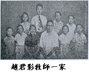
資料來源
- 趙君影著，《漫談五十年來中國的教會與政治》，中華歸主協會出版，1981年。
- 趙君影著，《我的宗教經驗》，臺北巿中華歸主協會出版，1982年。
- 趙君影著，《西洋古代哲學家的上帝信仰》，臺北巿中國主日學協會，1983年。
- 趙君影著，《西洋近代哲學家的上帝信仰》，臺北巿中華歸主協會，1983年。
- 趙君影著，《西洋現代哲學家的上帝信仰》，臺北巿中華歸主協會，1983年。
- 陳福中編，《王明道小傳》第七章，基督徒出版社，2011年。
- 安達姬著，黃從真譯，《艾得理傳》，校園出版社，1994年。
- 于力工，“趙君影與抗戰期間的基督徒學生運動”，《傳》1996年，7/8月號。
- 查大衛，“紀念我的恩人趙君影牧師”，《傳》，1996年，7/8月號。
關於作者
徐英朗
作者畢業於臺灣基督教中原理工學院電子系，現為美國加州基督工人神學院碩士研究生，在李亞丁教授指導下撰寫此文。
http://bdcconline.net/zh-hant/stories/zhao-junying
鄭德富校長
2008年7月
中華傳道會起源於上世紀中葉我國一個政局紛亂、戰禍連綿、民生艱苦的大時代。她的創立和發展，交織著西方基督教宣教士在我國披荊斬棘的宣教歷程，也回應了風雲變幻的政治變遷以及人民在顛沛流離日子中的心靈需要。在困乏憂患的環境下，一眾有名或無名的傳道者不畏艱辛險阻，努力宣揚福音，既有流淚撒種，也更有歡呼收成。福音能夠廣傳，一切都是上主的恩典。
時維1943年4月，中華傳道會在動盪不安的日子於貴州省貴陽市創立。按發展的脈絡，其成長大致可分為以下4個時期︰
從創會至抗日戰爭結束 (1943 – 1945)
自19世紀初起到20世紀30年代，西方各基督教宗派秉承宣教使命，差遣不計其數的宣教士來華傳道並建立教會，福音的種子在神州大地逐漸傳開。至1937年，日本發動大規模侵華戰爭，華北、華東與華中等地烽煙四起，生靈塗炭，數以千計在華工作的西方宣教士被逼撤離中國，所留下的傳道及教會牧養工作，不得不由中國基督徒承擔。
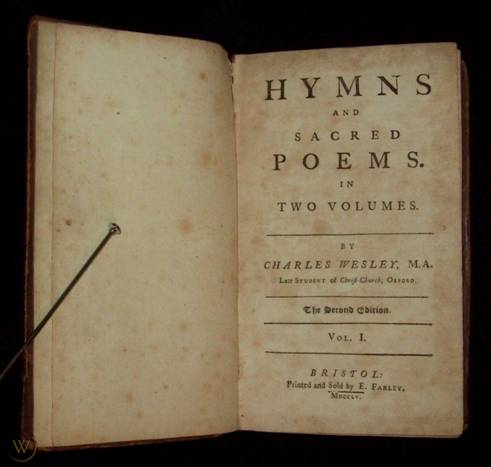
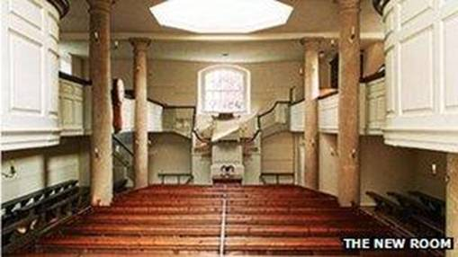
麥克德肯牧師
首位會長翟普生醫生
當時在中國江西省傳道的美籍蘇格蘭裔麥克德肯牧師（Rev. Duncan
McRoberts）深深體會到戰事即使結束，西方宣教士亦未必可以返回中國像過往一樣自由傳道。因此，他於1942年返回美國後，在其朋友翟普生醫生(Dr. N.A.
Jepson)
於美國西雅圖醫務所舉行的「國際基督徒商人團契」(見註)聚會裡，向一群敬虔和熱心佈道的美國基督徒商人提出「由美國基督徒提供的經費、由中國人向自已同胞傳福音」的逼切需要。
當時出席者有6人，包括翟普生醫生本人和薛凱德先生(Mr. Cecil A.
Kettle)。他們均熱烈響應這建議，並決定組織一個新的宣教團體，命名為「中國基督徒佈道十字軍」(China Native Evangelistic
Crusade，簡稱CNEC，即「中華傳道會」前身) ，並開始招募中國人擔任傳道，希望能憑藉方便的語言，熟悉的環境和切身的經驗，更有效將福音傳給自己的同胞。

麥克德肯牧師與會內董事商議中國福音工
作。圖左掛圖為中國地圖。
(註: 「國際基督徒商人團契」(Christian Business Men’s Committee ) 於1930年在美國芝加哥成立，旨
在推動佈道和基督徒靈性復興運動，以回應當時美國經濟大蕭條時代人心靈的需要。翟普生醫生是該
團契的創辦人之一。 )
1943年4月，「中國基督徒佈道十字軍」成立，由翟普生醫生擔任首任會長。(後來薛凱德先生擔任第二任會長。)當時在貴州省傳道的趙君影牧師被委任為監督。第一間福音堂，即在貴州省貴陽市附近的開陽設立。
第二任會長薛凱德先生
趙君影牧師生於1906年湖北省漢川縣，少時家貧、多病。他後來勤奮苦讀，肄業於杭州基督教之江大學。1931年，他在江蘇省淮安市淮陰教會的一次佈道會上，決志信主。他後來在江蘇省江陰市教會學校擔任英文教師。1935年，他決定奉獻為主做傳道工作，並自那年起，巡迴上海、香港、雲南昆明、貴州貴陽等地舉行佈道和培靈奮興聚會。(有關趙君影牧師其他生平事蹟，見本文「後記」的甲部「人物介紹」。)
1937年日本侵華。為了逃避戰禍，不少華北和華東的大學遷徙至四川重慶、成都、貴州貴陽或雲南昆明等西南省市復辦。因此，數以萬計的青年學生也須流徙至這些省市完成大學學業。在苦難與戰爭的陰影之下，這些遠離家鄉落泊飄零的青年學子，十分需要福音的慰藉和信仰的支持。趙君影牧師就在這個火紅的年代興起，把握時機，於1938年至1945年期間，在西南各地方，與眾同工投身這個波瀾壯闊的大學生佈道與奮興運動，舉辦了不計其數的團契、崇拜、查經、祈禱會、培靈會和佈道會等聚會，福音大大興旺。
趙牧師於1943年擔任「中國基督徒佈道十字軍」監督一職之後，仍然領導和發展這個熾熱奮興的學生福音運動。同年，他邀請了于力工牧師加入「中國基督徒佈道十字軍」，成為重要的學生佈道工作的伙伴。(于力工牧師於
11歲時在山東信主，1939年起在中國各地向學生傳道。戰後，他先後擔任新加坡神學院首任院長，以及美國北加州基督工人神學院首任院長。于牧師著作等身，是主所重用的忠心僕人。)
除了在西南各地方，趙牧師等亦曾前往湖南省沅陵縣等地舉辦奮興會、佈道會及中學主福音聚會。
1944年春天，趙牧師與同工在四川重慶舉行奮興會。其時日軍已威脅貴州，戰機經常空襲，趙牧師夫婦和其他同工不時逃向鄉村田間，躲避警報，工作十分艱辛。趙牧師為了逃避戰禍，亦深深感到重慶作為陪都的重要政治和經濟地位，遂將「中國基督徒佈道十字軍」總部遷往重慶，並獲重慶靈修神學院院長賈玉銘牧師的支持，在該院設立辦事處。
1944年夏天，趙君影牧師與于力工牧師在位於重慶北碚的國立復旦大學舉行佈道會，反應熱烈，決志者眾，多位基督徒學生立志獻身傳道；當時悔改和復興的火焰蔓延，轟動了整個校園。同年冬天，趙牧師與于牧師於重慶市郊沙坪霸大學區內中央大學和重慶大學的聯合校址，舉辦了3天佈道會。這次聚會由中央大學基督徒學生福音團契籌備，每晚佈道會約2000餘人參加，悔改決志歸主者每晚約200人；期間早禱會有幾百人參加，禱告氣氛非常熾熱。當時沙坪霸佈道會的興旺情況，引起了社會關注和報章報導。
這一年，趙牧師與于牧師在重慶各大學和中學多次舉行佈道和培靈聚會。趙牧師常常邀請當時暫在重慶靈修神學院執教的蘇佐揚牧師擔任司琴或領唱。趙牧師寫了近廿首詩歌，其中5首乃由蘇牧師譜曲，包括膾炙人口的《主若是》、《盡忠為主》和《主啊我心愛你》。
(蘇佐揚牧師後來於1948年回港定居。在2001年，他以85歲高齡，慷慨為當時剛開辦兩年的中華傳道會劉永生中學創作校歌。有關他的生平事蹟，可參看中華傳道會劉永生中學學校網頁「學校概覽」內「校歌」一欄。)
蘇佐揚牧師
福音的火炬繼續燃燒。這一年，趙牧師與于牧師多次在重慶各大學和中學舉行佈道和培靈聚會，福音工作轉瞬間遍及各學校。儘管「中國基督徒佈道十字軍」的人手有限，本來無法顧及眾多工作，但基督徒學生們自發自主的參與，成為迅速蔓延的動力。他們除了建立團契、追求信仰成長，更肩負起校園的傳福音使命。
1945年，「中國基督徒佈道十字軍」獲賈玉銘牧師支持，在靈修神學院內設立傳道人訓練所，由趙牧師委派數位同工執教。同年出版刊物《傳道》；由於抗戰時期刊物出版甚少，所以該刊極受歡迎。同年盧約翰牧師加入「中國基督徒佈道十字軍」，擔任司庫，工作發展至貴州省內多處地方。同年，在雲南工作的上海「中華神學院」畢業生翟明霞女士加入「中國基督徒佈道十字軍」為同工，並被趙君影牧師委派在靈修神學院任教。(有關翟女士和她的丈夫李開煥牧師的佈道事蹟，見本文「後記」的甲部「人物介紹」。)
熊熊的福音火焰，不停傳遞。1945年7月13日至23日，趙君影牧師領導「中國基督徒佈道十字軍」與靈修神學院合作，假靈修神學院，舉行劃時代的第一屆全國各大學基督徒學生夏令會。當時赴會的學生來自西南及西北地區共41間大學的團契，約共169人。他們不少須不辭勞苦，經過數天長途跋涉才能赴會。經歷了這個令人心靈振奮的夏令會和復興運動，他們的信仰得以重燃，有不少人更立志作傳道工作，並且日後成為教會領袖，對往後中國內地及海外的華人福音工作，以及香港和台灣的大學生福音運動，影響至鉅。(當時奉獻全職傳道的大學生，包括當時擔任西北聯合大學團契主席，後來遷居香港的著名牧者和神學家滕近輝牧師，以及日後遷居香港及加拿大的著名牧者和解經家陳終道牧師。)
夏令會結束前夕，一個嶄新的聯校基督徒大學生組織 － 「中國各大學基督徒學生聯合會」(Chinese Inter-varsity Christian
Fellowship,
簡稱「學聯會」或CIVCF)，終告成立。(「學聯會」乃日後台灣校園團契的前身。)趙牧師除了擔任「中國基督徒佈道十字軍」監督一職外，也兼任該會總幹事。
從抗日戰爭結束至中國政權交替
(1945 – 1949)
抗日戰爭於1945年8月15日結束。「中國基督徒佈道十字軍」當時在貴州、陝西、新疆、四川和甘肅西北五省的傳道同工共有38人。為了將佈道工作從西南向東擴展，「中國基督徒佈道十字軍」的辦事處亦由重慶遷往南京，再遷往上海。其後周志禹牧師亦加入「中國基督徒佈道十字軍」，並將其所負責的上海聖經學社，歸併「中國基督徒佈道十字軍」，改名為「上海聖經學院」，並擔任院長一職。(周志禹牧師是我國的名牧。1952年，中華傳道會在香港創立香港聖經學院
(即香港神學院前身)，周志禹牧師擔任首任院長。)
1947年2月，美國總會會長翟普生醫生和麥克德肯牧師從美國來上海視察。當年，傳道同工人數增至160餘人，教會亦相繼在山東、江西，廣東，福建等省份成立，並在南京亦開辦了孤兒院。至此，工作擴展至全國14個省份。
1947年，趙君影牧師請辭「中國基督徒佈道十字軍」監督一職，全職擔任「中國各大學基督徒學生聯合會」總幹事，其空缺由周志禹牧師接替。同年7月，國共內戰全面爆發。在這戰禍開始延續的日子，「中國各大學基督徒學生聯合會」承接過去大學生信仰復興運動的豐碩成果，在南京中山陵附近的國軍烈士遺族學校，舉辦第二屆全國各大學基督徒大學生夏令會。該聚會的講員有趙君影牧師和賈玉銘牧師等，參加者來自全國各地，人數空前，很多人靈性得著復興，會上約300位青年表示願意為主奉獻，其中有不少更蒙上主的呼召到我國邊疆宣教。(著名基督教詩歌集《獻給無名的傳道者》的作者邊雲波先生，當時認識不少長期在邊疆荒蕪之地佈道的年輕傳道人。這些傳道人無懼勞苦，甘於寂寂無名，但求福音傳開。邊先生為此大受感動，於是以敘事詩歌形式寫成《獻給無名的傳道者》一書，激勵了很多讀者委身信仰。)往後大學生的佈道和奮興工作有進深發展。
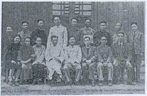
1950年中華傳道會
貴州省傳道同工合照
至1951年，「中國基督徒佈道十字軍」和「學聯會」共帶領了近兩萬多學生信主，對日後廿世紀下半葉台灣和香港的大學生福音工作，以及國內的家庭教會的發展，影響深遠。
1947年，周志禹牧師往貴陽及重慶等地視察工作。他鑑於當地有不少回教徒對「十字軍」一名不存好感，乃將「中國基督徒佈道十字軍」這個中文名字改為「中華傳道會」。英文名稱“China
Native Evangelistic Crusade” 的“Evangelistic Crusade” (意思是「佈道十字軍」)，改為 “Evangelism
Commission”(意思是「傳道會」或「傳福音的使團」) ，全名便是 “China Native Evangelism
Commission”，簡寫仍是CNEC。
1948年國共內戰持續，共軍節節勝利，國內政局開始轉變，福音工作亦受到很大的攔阻。為延續華人地區的佈道工作，中華傳道會獲美國總部指示將上海的辦事處遷移香港，上海的神學院亦相繼結束。
1949年1月16日，周志禹牧師與同工到港，在尖沙咀加拿芬道設立臨時辦事處。
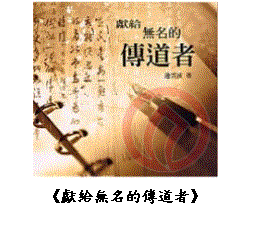
遷港工作至一九六零年 (1949–1960)
1950年，趙君影牧師全家來港定居，並於12月重任中華傳道會監督。而中華傳道會在上海的辦事處及其他內地的工作，則於1951年交由國內傳道同工留守。基於政治因素，這些同工和會內其他的基督徒很快便與香港和美國的同工失去聯繫。他們後來或遭受政治逼害，或被逼歸併政府「三自愛國教會」，或轉入地下家庭教會聚會。
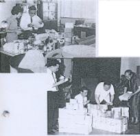
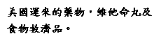
1951年9月，中華傳道會創立香港短期培靈學院，由趙君影牧師主理。周志禹牧師亦同期發行《真道雜誌》及其他屬靈書籍。此外，同工顏東美牧師領導由部份伯特利神學院同學及各堂會同工組成的佈道隊，以「遍傳福音會」為名，四出向各難民區傳福音。當時華僑的佈道工作，如火如荼，奠定了中華傳道會在港最初幾個堂會的基礎。這些堂會包括於1951年成立的活水堂
(前身為西頭村福音堂，是中華傳道會在香港首間堂會；原址位於西頭村，即今九龍城區內) ；於1951年成立的紅磡基督教會
(原址位於馬頭圍道)；於1951年成立的活道堂
(原址位於青山道)；於1953年成立的靈磐堂(原址位於西營盤，是現今佑寧堂的前身)；於1954年成立的白沙灣基督教會(位於西貢白沙灣)。
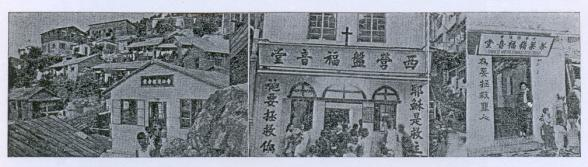
1951年，趙君影牧師前往南洋發展福音工作，香港區工作則交由周志禹牧師負責。趙牧師在新加坡與基督教聯合會創辦新加坡神學院，並擔任院長。趙牧師其後不斷開拓新加坡、馬來亞和泰國的佈道工作。
1952年，中華傳道會創立香港聖經學院
(即香港神學院前身)，由周志禹牧師擔任院長。1953年6月，香港中華傳道會獲美國總會指示，鑑於傳道工作已逐漸由中國內地轉移到亞洲各地華人社區，服務地區不再局限於中國本土，所以將英文名稱中“China
Native Evangelism Commission” 的 “China”(中國)，改為 “Chinese”(華人)，全名因此改為 “Chinese
Native Evangelism Commission”，簡寫仍是CNEC，中文名稱保持不變。
1956年，趙君影牧師向中華傳道會請辭，舉家遷往美國洛杉磯定居，其新加坡的職務，由在香港工作的盧約翰牧師接替。(趙君影牧師遷美後，成立「基督教中華歸主協會」，並於1985年創辦「中華歸主神學院」。1996年，趙牧師以90高齡在美國洛杉磯逝世。)
1960年，美國總會歐奮勵牧師 (Rev. Allen B. Finley)
出任中華傳道會總監督。同年，他鑑於中華傳道會的佈道工作已開展至華人以外的地區，服務對象不再限於華人，故將英文名稱 “Chinese Native
Evangelism Commission” 的“Chinese” (華人)，改為“Christian”(基督徒)，“Native” (當地人)
亦改為“Nationals” (公民)，全名改為“Christian Nationals’ Evangelism Commission
”，簡寫仍是CNEC，中文意思仍是「福音自傳使團」(即是本地人向本地人傳福音的使團)。這個英文名稱，沿用至今。
同年10月，歐奮勵牧師與總部理事二人由美國來港和新加坡，將華人地區分為以下兩個教區：(1)
東亞教區，範圍包括香港、澳門和台灣，由桑安柱牧師擔任監督。(有關桑安柱牧師的生平簡介，見本文「後記」的甲部「人物介紹」。) (2)
東南亞教區，範圍包括新加坡、馬來西亞、泰國和印尼，由盧約翰牧師擔任監督。1961年，中華傳道會全球分為東亞教區（港台澳）、東南亞教區（星馬泰）、非洲區和南美洲教區共4個教區。從此中華傳道會體制確立，會務日見擴展。
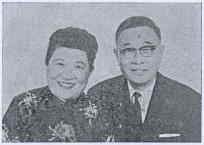
桑安柱牧師與師母
綜觀而言，中華傳道會至1960年初為止，正式同工有80人，香港有12間福音堂、台灣有一間佈道所、星馬有9間福音堂、泰北有4間福音堂，另外工作範圍包
括神學院、聖經學院、出版社、 天台學校、識字班、醫務所及救濟工作等。這一切均超越了以前在國內的工作。
香港事工的擴展 (1961–2003)
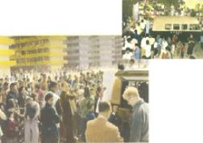
上世紀60年代至90年代末，中華傳道會在香港傳道辦學，提供社會服務，有可觀的發展。80年代起，聶錦勳博士擔任香港中華傳道會主席。(聶錦勳博士曾擔任中華傳道會會外及會內多間學校的校監。1999年中華傳道會劉永生中學創立，聶博士為首任校監，對劉永生中學的創辦及初期發展貢獻良多。聶博士是前工程拓展署署長，是終身學習的表率。他在50年代取得第一個學位之後，公餘一直進修，取得九個學位，包括工程、神學、數學、
經濟、中國及西方人文學等學科。聶博士曾任基督教興學會及中國神學研究院董事會主席，現任中華傳道會、香港神學院董事會主席。)
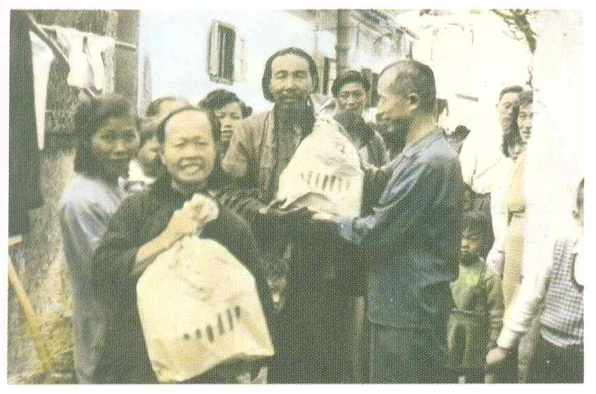
派發救濟品
自1992年起，香港神學院院長褚永華牧師兼任香港中華傳道會總幹事及東亞教區監督。(褚永華牧師擔任中華傳道會多間學校的校監或校董職務。劉永生中學創校以來褚永華牧師一直擔任校董一職，對劉永生中學的創辦及發展貢獻良多。褚永華牧師畢業於香港伯特利神學院，後負笈美國阿蘇沙太平洋大學取得文學士和文學碩士、亞斯庇利神學院道學碩士普林斯頓神學院神學碩士及范得標大學哲學博士。)
至2001年，中華傳道會在香港有20間堂會、一間老人中心、一間幼稚園、兩間政府津貼小學、3間政府津貼中學，以及一間神學院(香港神學院)。中華傳道會總會下設宣教事工委員會、青年事工委員會、出版事工委員會和教育事工委員會，發展各類型的事工。總會以及各堂會、神學院、學校和社會服務中心過去的工作詳情，散見各單位的年報和其他刊物。以下是堂會、學校和社會服務一些重點資料:
堂會:
|
堂會名稱
|
創立年份
|
會址
|
|
紅磡基督教會
|
1951年
|
土瓜灣
|
|
活水堂
|
1951年
|
界限街
|
|
活道堂
|
1951年
|
深水埗
|
|
白沙灣基督教會
|
1954年
|
西貢白沙灣
|
|
堅信堂
|
1964年
|
慈雲山
|
|
佳音堂
|
1965年
|
元朗
|
|
牧幼堂
|
1966年
|
太子道
|
|
祐寧堂
|
1968年
|
灣仔
|
|
中心堂
|
1971年
|
長沙灣
|
|
葵興堂
|
1971年
|
葵興 (位於許大同學校)
|
|
安柱堂
|
1978年
|
石籬 (位於安柱中學)
|
|
盛福堂
|
1984年
|
葵盛 (位於李賢堯紀念中學)
|
|
活石堂
|
1985年
|
觀塘
|
|
青衣堂
|
1989年
|
青衣 (位於呂明才小學)
|
|
恩光堂
|
1992年
|
大埔
|
|
福門堂
|
1995年
|
旺角
|
|
上水基督教會
|
1995年
|
上水
|
|
基石堂
|
1997年
|
秀茂坪 (位於基石幼稚園)
|
|
柴灣堂
|
1999年
|
柴灣 (位於劉永生中學)
|
|
活門堂
|
2001年
|
屯門
|
學校:
中華傳道會於上世紀60年代設教育部領導學校的開辦和發展。教育部長一職，有很長的時間由竇長佑先生擔任。(有關竇長佑先生的生平簡介，見本文「後記」的甲部「人物介紹」。)秉承基督教辦學傳道的宗旨，中華傳道會所有學校均設聖經課和提供基督教全人教育，並設立教會以照顧學生和家長的信仰需要。中華傳道會於上世紀50及60年代創辦的小學和幼稚園有7間，於70年至90年代創辦的中學、小學和幼稚園有6間。前者7間學校因香港的土地規劃及人口發展需要，已全部停辦和拆卸。以下是這些學校的簡述:
(甲) 早期開辦，但因香港的土地及人口發展需要而需拆卸的小學及幼稚園:
|
學校名稱 |
創立年份 |
校址 |
|
德成學校 |
1959年 |
黃大仙徙置區 (天台小學) |
|
恩光學校 |
1960年 |
九龍城寨 (附設幼稚園及診所) |
|
愛明學校 |
1961年 |
油塘徙置區 (天台小學) |
|
拔士學校 |
1963年 |
九龍城老虎岩，即現今樂富
(天台小學) |
|
牧幼學校 |
1966年 |
藍田
(中華傳道會首間政府津貼小學。1988年前遷拆，於青衣島建立呂明才小學) |
|
秀茂坪幼稚園 |
1966年 |
秀茂坪 |
|
潔琳幼稚園 |
1969年 |
紅磡馬頭圍道 |
以上學校絕大部份的學生來自貧苦家庭。1968年的學生總人數，超過五千。
中華傳道會早期學校學生活動情況
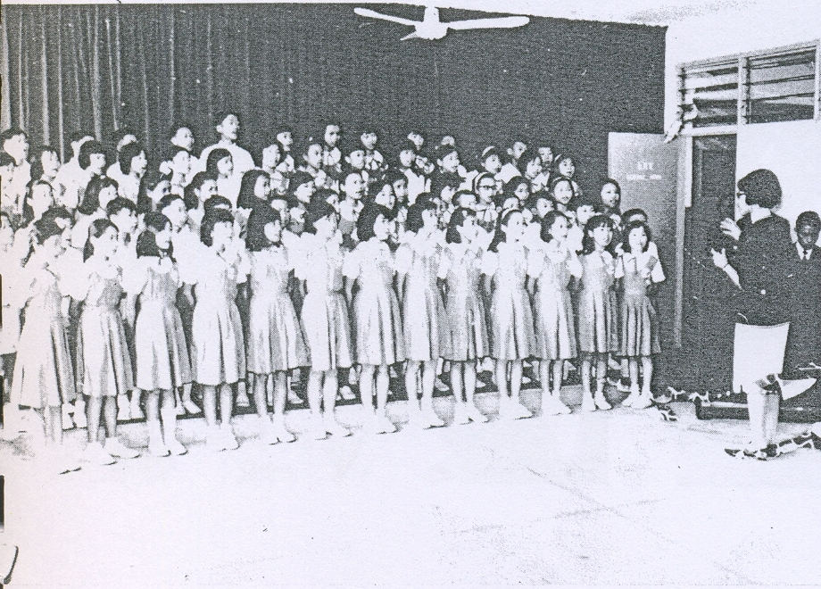
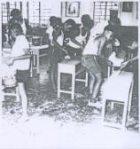
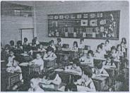
中華傳道會早期學校的特點—辦學在徙置區天台
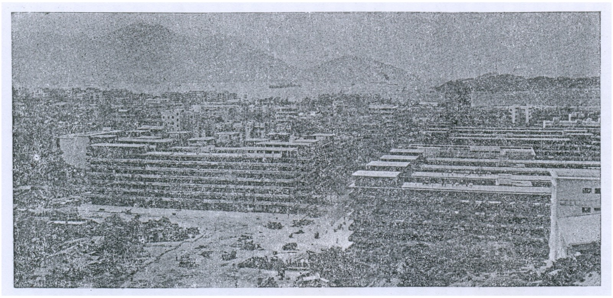
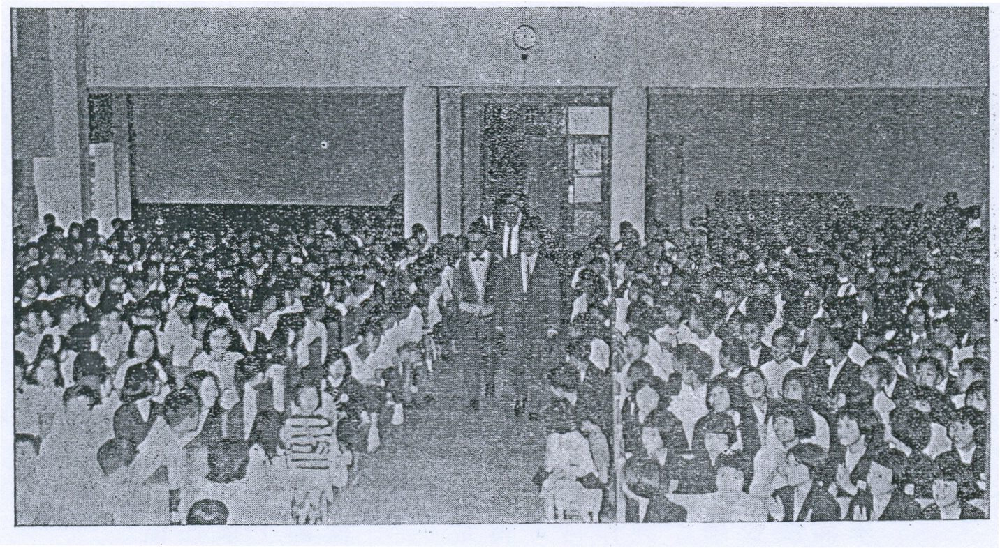
聖樂佈道會
(乙)
現時的中、小學和幼稚園
|
學校名稱 |
創立年份 |
校址 |
備註 |
|
許大同學校 |
1971年 |
葵興 |
中華傳道會第二間政府津貼小學 |
|
安柱中學 |
1973年 |
石籬 |
中華傳道會第一間政府津貼中學 |
|
李賢堯紀念中學 |
1981年 |
葵盛 |
中華傳道會第二間政府津貼中學 |
|
呂明才小學 |
1988年 |
青衣島 |
中華傳道會第三間政府津貼小學 |
|
基石幼稚園 |
1997年 |
秀茂坪 |
- - - |
|
劉永生中學 |
1999年 |
柴灣 |
中華傳道會第三間政府津貼中學 |
社會服務
上世紀50年代至70年代香港經濟急速發展。為了改善生活，市民勤勞工作，胼手胝足。在這民生艱苦的日子，中華傳道會本著基督全人關顧的精神，提供醫療、康樂、教育、出版及老人社會服務，令貧苦大眾受惠，也透過這些服務讓人得著福音的好處。以下是這些社會服務的概略：
(一) 診所服務
|
中華傳道會總會於1964年9月成立慈惠部，負責診所醫療服務、救濟、傳道同工與信徒福利和慈惠工作。診所服務包括:
(a) 活水診所 - 該診所設於九龍城衙前圍道136號二樓，由徐濟世醫生主診。
(b) 紅磡診所
慈光贈診所於1956年在九龍城寨內的龍城道開設，免費為貧苦病者及吸毒者提供醫療及戒毒治療。該診所由曹毅醫生夫婦主理，求診的貧苦病者甚多。中華傳道會總會於1960年在西頭村(即今九龍城區內)龍津道134號A至136號租賃一座樓高四層寬大的唐樓，設立「中華傳道會福音中心」，並將西頭村佈道所和慈光贈診所遷入該福音中心內，和將該佈道所易名為恩光福音堂。該堂堂址設於福音中心地下，慈光贈診所則遷入福音中心的閣樓，並易名為恩光贈診所。1965年，診所遷往油塘灣新區，繼續推展醫療服務。
(c) 慈光贈診所 / 恩光贈診所
紅磡褔音堂(即紅磡基督教會前身)於1956年2月設立紅磡診所，服務貧苦坊眾。該診所先後由楊逢春醫生和陳杰醫生主診；至1963年1月，由陳立僑醫生夫婦主診，診所改名為路加醫務所，並向政府正式註冊。1964年7月至1965年2月，診所事務先後由曾振歐醫生和陳守毅醫生主理。
|
(二) 學生中心、青年中心
|
中華傳道會監督桑安柱牧師深感青年工作與教會發展的重要性，乃於1962年開始推動青年事工，並邀請高雲漢牧師和朱文達牧師先後於1963年和1965年開始專責青年工作；1965年進一步成立青年部，服務會內、外的青年。以下是初期青年工作的簡述:
(a) 太子道青年中心 / 學生中心
首間青年中心於1965年6月在九龍太子道333號二樓設立，除舉辦佈道聚會及個人談道外，也設有各種中外書報，和舉辦英語會話班、打字班、相片沖曬班、插花藝術班和各種康樂活動。中心當時得到多位大專同學義務協助。
青年中心後因租金昂貴及地方狹小，於1967年7月遷至太子道283號八樓。由於參加者多數是學生，該中心後來易名為「學生中心」。
(b) 橫頭磡青年中心
1967年3月，中華傳道會總會獲香港政府社會福利處撥出九龍橫頭磡19座南翼天台，創辦青年中心。該中心於當年9月投入服務，除了舉辦佈道聚會和放映宗教電影與幻燈外，也提供童軍訓練、英語會話班、補習班、國語班、國術組、曬相組、乒乓組、唱片欣賞會、生日會、各類比賽等活動。該中心亦備有一般及屬靈的報刊供青少年閱讀，以及壁報供青少年觀賞及創作。
|
(三) 晨光書局、晨光報社、分享書室
|
承接過去在上海出版《真道雜誌》，周志禹牧師來港後於1951年繼續發行《真道雜誌》，並擔任主筆。該雜誌翌年5月易名為《晨光報》。其後主編一職，先後由桑安柱牧師和宋華忠牧師接任，《晨光報》亦由雙月刊改為月刊。當時中華傳道會出版部除出版《晨光報》外，也出版屬靈書籍、福音小冊子和單張等。1965年吳恩溥牧師繼任《晨光報》主編，擴展文字服務，並於1966年在香港聖經學院(即今香港神學院)南邊一小屋開設門市部，作為晨光書局和晨光報社編輯和發行的地方。《晨光報》每月的發行量由1966年約3500份，增加至1968年約5000。中華傳道會後來另於九龍城開設分享書室，推廣及銷售各項屬靈書籍及刊物。 |
(四) 平民義校及夜校
|
(a) 紅磡平民義校
戰後內地難民來港甚多，生活艱苦。1952年秋，紅磡褔音堂在堂內成立兒童平民義校，為貧苦兒童提供教育。該校由最初一班增加至後來四班。至1964年，平民義校才結束。
(b) 九龍城福音堂平民義學
中華傳道會總會於1953年在九龍城南角道開辦「九龍城福音堂平民義學」，為貧苦兒童提供教育。後來總會於1960年在城寨內的龍津道租賃得一座樓高四層寬大的唐樓，設立「中華傳道會福音中心」，並將「九龍城福音堂平民義學」遷入「福音中心」二、三、四樓內。該校後來名為德成分校，再易名恩光學校。
(c) 愛明夜校
愛明學校於1961年9月在觀塘徙置區第4座天台成立。鑑於該區有很多工廠工人早年失學，愛明學校成立夜校部，提供工友小學教育服務。夜校學生最初有70多人，到1963年增至400多人。由於後期工廠工友大都受過小學教育，所以夜校於1967年停辦。
|
(五) 老人中心
|
1979年4月，中華傳道會在華人基督教聯會位於九龍城寨的前廣蔭老人院舊址，開辦城寨老人中心和發展恩光園福音事工，服務附近長者。1987年，政府拆卸九龍城寨，老人中心於1991年8月遷往大埔富善村，易名為恩光老人中心。 |
結語
|
中華傳道會創立於上世紀中葉我國風起雲湧的大時代，經歷了抗日戰爭、國共內戰和政治壓逼的洗禮。在走過的日子，眾多有名或無名的傳道人和信徒，為回應上主的愛和忠於上主的呼召，不畏艱辛，無懼困乏，努力在神州大地遍傳福音，建立教會，留下了佳美的腳蹤，對往後內地家庭教會的發展，以及海外佈道和學生福音工作的延伸，影響深遠。
移遷香港後，中華傳道會總會暨眾堂會與香港市民一起成長，共度時艱，在戰後百廢待舉的日子，致力興辦學校和提供其他社會服務，令貧苦大眾受惠；也努力佈道和植堂，讓人得著福音的好處。
韶光荏苒，中華傳道會成立至今已數十載了。就時、空兩個層面而言，這段歷史或許不算悠長與壯闊，但在我國基督教歷史上，卻留下了一個重要席位和美好的見証。但願教會眾先賢所譜寫的信仰生命讚歌，成為後人的激勵。
「我們既有這許多的見證人，如同雲彩圍著我們，就當放下各樣的重擔，脫去容易纏累我們的罪，存心忍耐，奔那擺在我們前頭的路程，仰望為我們信心創始成終的耶穌。」(希伯來書
12章 1、2節)
|
後記:
(甲) 人物介紹
1. 趙君影牧師
|
趙君影牧師生於1906年湖北省漢川縣，少時家貧、多病。他後來勤奮苦讀，肄業於杭州基督教之江大學。1931年，他在江蘇省淮安市淮陰教會的一次佈道會上，決志信主。他後來在江蘇省江陰市教會學校擔任英文教師。1935年，他決定奉獻為主做傳道工作，並自那年起，巡迴上海、香港、雲南昆明、貴州貴陽等地舉行佈道和培靈奮興聚會。
趙君影牧師唸大學期間，為大學籃球校隊隊員。他還差三個月就大學畢業時，卻肺病復發，不得不立即退學養病。他年青時曾胸懷大志，愛讀名人傳記，想創偉業，惟宗教祇是他生活的點綴，不是生活的動力。他曾說過：「三十六行，敲鑼賣糖，行行都行，就是牧師不當。」1931年，他參加了淮陰教會的佈道會。當時大佈道家計志文牧師及上海伯特利佈道團負責主領聚會。計牧師不用甚麼高言大智去傳福音，只簡單直接的引用聖經，並穿插一些動人故事，使不少與會者非常感動，悔改信主。趙牧師雖然心受感動，但不願當眾決志。但他卻被許牧師指出：「人人都是罪人，即使受了大學教育，仍是罪人，應該悔改」，結果他就一面禱告，一面哭泣的走到臺前決志信主。四年後他決志奉獻為神作傳道工作。
趙牧師起初在揚州參加基督教內地會的傳道工作，沒有固定薪水，生活清苦。某次，他的父親對他大發脾氣，要與他斷絕父子的關係，甚至要拿刀斬他，因他的父親視傳道工作如同討飯的乞丐。趙牧師非常痛苦的在神面前禱告：「我是一個討飯的傳道人，我枉費了人生，毫無志氣，連父親都養不活，我虛度了人生嗎？但甚麼比遵行你的旨意更高貴、更美好呢？」他就這樣仍然決心走上傳道之路。
有一次當他準備前往外地主領聚會時，卻苦無路費，最後由妻子提出賣掉最深愛的結婚戒指。她曾這樣禱告：「戒指雖是我們結婚紀念品，但我愛你勝過一切。故現在將戒指的所有權，完全交托給你，它已屬於你了。」在典當戒指的那一刻，趙牧師心中默禱︰「上帝啊！現在我可以從心裡說︰我是愛你。」他含著眼淚回到家，將一半的錢作為家用，一半當作路費。當他於翌日坐火車往領會的地方時，在車上受神的感動，眼淚不住流下，寫出了一首今日仍感動著萬千信徒的詩歌，就是《主啊，我深愛你！》，其中一段的歌詞是：「我眼流淚，我心破碎，主啊，我深愛你！或遭敵對，或遭誤會，主啊，我深愛你！衣不蔽體，食不充飢。主啊！我心愛你！..」寫出他被主的愛所吸引而完全放下一切去事奉主。
鋼鐵就是這樣鍊成的。趙牧師成長坎坷，肺病的磨練及生活的因苦，讓他學習憑信心依靠神。神就這樣訓練了他，令他日後於1938年至1948年期間，在西南各地方領導「中國基督徒佈道十字軍」(即「中華傳道會」前身)和「全國基督徒大學生聯合會」，努力推動大學生福音與復興工作的時候，能持堅定信心，能夠排除萬難，完成這歷史任務。
1950年，趙君影牧師全家來港，並於1951年前往星加坡發展創辦新加坡神學院，並擔任院長。其後趙牧師不斷在新加坡、馬來亞和泰國開拓佈道工作，建立教會。1956年，趙君影牧師向中華傳道會請辭，舉家遷往美國洛杉磯定居。趙君影牧師遷美後，成立「基督教中華歸主協會」，並於1985年創辦「中華歸主神學院」。1996年，趙牧師以90高齡在美國洛杉磯逝世。
|
2.
李開煥牧師
|
1945年，「中國基督徒佈道十字軍」獲重慶靈修神學院院長賈玉銘牧師支持，在神學院內設立傳道人訓練所。同年，在雲南工作的上海「中華神學院」畢業生翟明霞女士加入「中國基督徒佈道十字軍」為同工，並被趙君影牧師委派在靈修神學院任教。翟女士的丈夫李開煥先生(Mr.
Paul Lee) 是一位虔誠的基督徒，於雲南郵政局任職。
當時國民政府正計劃在新疆省迪化市（今烏魯木齊）設立郵政總局。李開煥先生藉這次機會，獲政府調職往新疆迪化擔任郵局局長。李先生於是與翟女士攜同三個孩子往新疆工作，並以「中國基督徒佈道十字軍」名義，開荒佈道。因此，新疆已關閉甚久的福音大門，終於重開。
李先生甫到任，便積極在街頭佈道，並且在《新疆日報》上刊登廣告，號召當地基督徒前來聚會。他更於當年建立具歷史意義的第一間新疆教會，亦是
「中國基督徒佈道十字軍」全國第一間的教會
－「新疆中華基督教會」（今稱為「明德路基督教堂」），並出任牧師。李牧師是「中國基督徒佈道十字軍」第一位被按立的牧師。
他們夫婦二人憑著信心，在西北荒漠傳揚福音，信徒人數達至幾百人。當時教會是用俄文、維吾爾文和中文三種語言崇拜。第一次洗禮，是在1945年12月23日寒冬於廸化一個溫泉舉行。1949年11月共產政府接管新疆。這時教會以迪化?中心的福音工作，已拓展到附近城鎮。1958年李開煥牧師安息主懷。文革時期教會關閉。至1985年教會才恢復聚會，人數約400人。1994年教會重建，近年聚會人數增至約3,000。
|
3.
桑安柱牧師
桑安柱牧師與師母
|
桑安柱牧師在上海出生，早年於內地寧波循道中學完成學業，復在蘇州東吳大學化學系畢業。他曾在上海擔任教會牧職，並曾於1945年參加趙君影牧師在重慶所領導的「全國各大學基督徒學生聯合會」佈道運動。後負笈美國芝加哥，於1949年在惠敦大學
(Wheaton
College)修畢神學。桑牧師多年從事基督教文字工作，著作甚豐，並於1959年任中華傳道會《晨光報》編輯一職。他擔任東亞教區監督期間，致力興辦學校，為香港貧苦學生提供基督教教育，並且推動教會的發展，實踐中華傳道會早年的福音自傳精神。為紀念他的貢獻，中華傳道會於1973年在香港新界葵涌石籬創辦首間中學時，以他的名字命名該中學為安柱中學。桑牧師在1998年於美國逝世。 |
4.竇長佑先生
竇長佑先生
|
中華傳道會在香港辦學的歷史裡，竇長佑先生佔了一個十分重要的席位。竇先生於1920年在天津出生，畢業於北京輔仁大學社會系。他於1960年來港，先後參加中華傳道會紅磡基督教會及中心堂聚會，並獲當時中華傳道會監督桑安柱牧師邀請，擔任中華傳道會幹事工作。他歷任多屆教育部長及中、小學校董，領導會內學校教育事工以及校園內教會的發展。這些學校包括愛明小學、拔士小學、牧幼小學，以及許大同小學等。1973年，他與桑安柱牧師籌建安柱中學，並擔任安柱中學校監一職10年，領導校務發展並協助成立安柱堂。竇先生1986年退休後在北京生活，於2005年辭世。 |
(乙) 中華傳道會曾使用的名稱
中華傳道會自創立以來，因著佈道事工的發展需要曾數易其中文及英文名稱，但仍保留其「福音自傳使團」的精神及CNEC的英文縮寫。以下是其中文及英文名稱的改變和原因:
|
年份 |
中文名稱 |
英文名稱 (CNEC) |
命名或改名的原因 |
|
1943年 |
中國基督徒佈道十字軍 |
China Native Evangelistic Crusade |
中國人將福音傳給自己同胞 |
|
1947年 |
中華傳道會 |
China Native Evangelism Commission |
中國西南部回教徒對「十字軍」(Crusade)一名不存好感，不利褔音在這些地方傳播 |
|
1953年 |
中華傳道會 |
Chinese Native Evangelism Commission |
傳道工作已由中國內地轉移到亞洲各地華人社區，服務地區不再局限於中國本土 |
|
1960年 |
中華傳道會 |
Christian Nationals’ Evangelism Commission |
佈道工作已開展至華人以外的地區，服務對象不再限於華人 |
(丙)
國際福音協傳會 (Partners International, PI)
上世紀40年代支持我國成立「中國基督徒佈道十字軍」的美國支援組織，在過去數十年來也以同一理念，支持世界其他地區的本土傳道同工向其同胞傳道，並協助英國(1946)、澳洲(1953)、加拿大(1960)及日本(1984)等國家成立組織和辦事處。1985年，他們普遍取名「國際福音協傳會」(Partners
International,
PI)，以反映本土傳道同工與海外支援組織的伙伴(partners)關係。「國際福音協傳會」已成為世界的佈道機構。香港的中華傳道會與海外的「國際福音協傳會」，乃屬一家。
http://www.lws.edu.hk/zh_tw/site/view?name=%E4%B8%AD%E8%8F%AF%E5%82%B3%E9%81%93%E6%9C%83%E7%9A%84%E5%89%B5%E7%AB%8B%E5%92%8C%E7%99%BC%E5%B1%95%E7%B0%A1%E7%95%A5